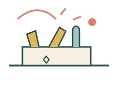

Editorial cover mock-up based on the PDF contents. This is a digital illustration rather than a product photograph.
Final edition · professionally approved
Pre-order by email
Publication language: Hungarian
Na, most mit csináljak?

Sometimes the first question is simply: what should we do now?
A Hungarian A4 story-and-activity book for children aged 8–11. Thirty-two everyday group situations lead into conversations, drawing, writing and making things together.
- 139 pages
- A4
- 32 stories · ages 8–11
The book is currently written in Hungarian. This page is an English description, not an English print edition.
Who is it for?
For children aged 8–11, families and adults who want to talk about everyday misunderstandings, friendship, boundaries and cooperation.
What's inside?
Thirty-two fictional workshop stories, illustrated scenes and activities to discuss, paint, draw or write. The story-world was inspired by locations and communities in Kóka, Hungary.
How to use it
Read in order or choose what feels familiar. Children can draw, talk, write or pass. For difficult experiences, a trusted adult can help.
Pre-order by email
You can send a pre-order request now. Sending an email does not confirm a purchase or reserve a copy. We will reply with the price, expected availability and terms before any order is confirmed. The webshop is still being prepared.
Send a pre-order requestNo online payment is taken here. Please do not include payment-card details in your email.
Come into the workshop
Everyday mix-ups make room for new stories
Thirty-two fictional stories for children aged eight to eleven take place in a workshop where plans change, friendships grow and everyone sometimes needs help.
Does this sound familiar?
Friendships, misunderstandings and things going wrong can be easier to discuss through a fictional story.
What can this publication offer?
Thirty-two workshop stories, conversational prompts and creative activities invite reading, drawing and writing together.
Beni would rather check his bicycle than step inside. Zorka wants to organise everything, Luca prefers to observe, Mira draws and Samu sometimes jokes too quickly. Dani and the adult helper Róza help the group find a way through shared plans and disagreements.
The 139-page A4 book pairs its stories with questions, drawing, writing and other creative activities. Children can invent another workshop day of their own. The order is flexible; telling a personal story or answering every question is not required.
Places and communities in Kóka inspired the setting, but the workshop events and dialogues are fictional. This is not an official publication or endorsement by local institutions.